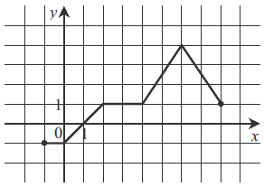

Dana jest funkcja \(y = f(x)\) określona dla \(x\in \langle -1, 8 \rangle\), której
wykres jest przedstawiony na rysunku.  Wskaż zbiór wartości tej funkcji
A.\( \{-1,0,1,2,3,4,5,6,7,8\} \)
B.\( (-1,4) \)
C.\( \langle -1,4 \rangle \)
D.\( \langle -1,8 \rangle \)